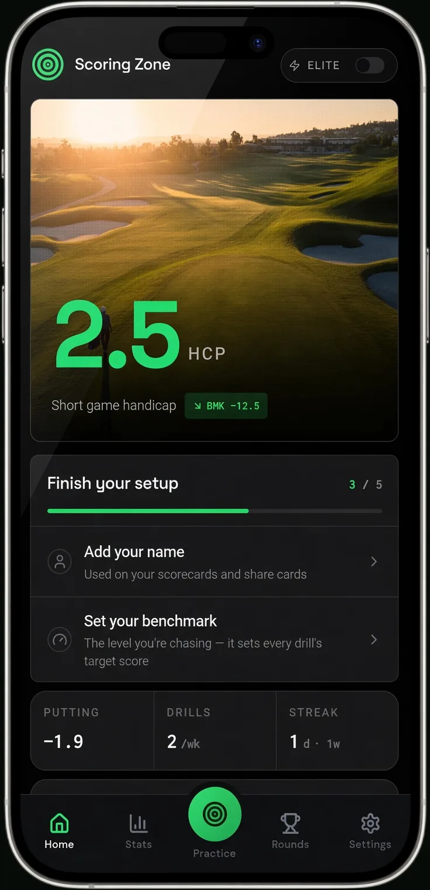
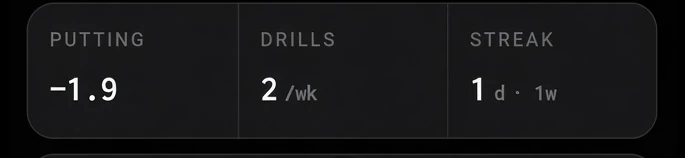
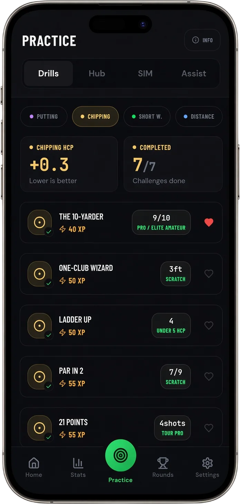
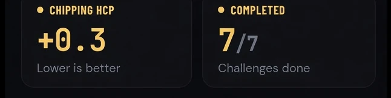

Golf Basics

Average Golf Handicap for Juniors by Age: Every Age From 7 to 18
Typical Handicap Ranges for Kids by Single Age — Boys, Girls, and How to Drop the Number
June 24, 2026 · 7 min read · Stephen Pickering
Typical Handicap Ranges for Kids by Single Age — Boys, Girls, and How to Drop the Number
June 24, 2026 · 7 min read · Stephen Pickering
Key takeaway: Junior handicaps fall fast between ages 10 and 16: most 12-year-olds sit around 22–28 and most 14-year-olds around 16–22, with single figures by the mid-teens for committed juniors. There’s no minimum age to get a handicap, and 9-hole cards count. The fastest way down at any age is structured short-game practice — not more range balls.
The average golf handicap for a junior who plays regularly runs from roughly 30+ at age 9–10 down to the low teens by 16–18, with most 12-year-olds around 22–28 and most 14-year-olds around 16–22. Those are typical ranges, not fixed numbers — and the spread inside any single age is huge. A 12-year-old who started at six with coaching can be a single-figure golfer, while one who picked up a club last summer might be off 35.
No governing body publishes an official “average handicap for a 13-year-old”, so the ranges below are built from how the World Handicap System distributes scores and how junior golfers typically progress. This guide breaks down the average golf handicap for juniors by single age, covers boys versus girls, explains how a child actually gets an official handicap, and shows the fastest way to bring the number down.
Parents almost always search a specific age rather than a range, so here is the average golf handicap for juniors broken down age by age. Read these as typical ranges for a junior who plays and practises semi-regularly — not a target your child has failed if they’re outside them.
| Age | Typical Handicap Range | Notes |
|---|---|---|
| 7–8 | No official index / ~45–54 | Most are just starting; few hold a handicap |
| 9 | 32–45 | Often the first official index, near the 54 max |
| 10 | 28–36 | Breaking 100 becomes realistic |
| 11 | 25–32 | Regular players start dropping fast |
| 12 | 22–28 | The widest spread of any junior age |
| 13 | 19–26 | Committed juniors pull clear here |
| 14 | 16–22 | Peak improvement window |
| 15 | 14–20 | Single figures appear for the keen ones |
| 16 | 12–18 | County and college prospects play scratch |
| 17 | 11–17 | Gap widens between casual and serious |
| 18 | 10–16 | Settled — the work from 12–16 shows |
The pattern is consistent: the number falls quickly between about 10 and 16 for any junior who plays regularly, then settles as they reach adult strength and a full schedule. Age sets the ceiling; practice volume sets where inside the range they land.
Want the full picture across every age group, not just juniors?
Average Golf Handicap by Age, Gender, and Experience →On average, junior girls carry a handicap a few strokes higher than boys of the same age. That gap is about participation and access — fewer rounds, fewer junior pathways — not ability. Girls also play from their own tees with separate Course and Slope Ratings, so a girl’s index and a boy’s index stay directly comparable as scoring measures.
As a rough guide, add three to six strokes to the boys’ ranges above for an average junior girl at the same age. The important part: at the top end there’s no gap worth talking about. Elite junior girls reach single figures and scratch on the same timeline as the boys, and the very best are doing it by 15 or 16.
If your daughter is new to the game, judge her the same way you’d judge any junior — by how fast the number is moving, not by where it started.
A junior gets an official handicap the same way an adult does: join a golf club or an affiliated body that issues a World Handicap System (WHS) index, then submit scorecards. The usual requirement is 54 holes to get a first index — that can be three 18-hole rounds, or a mix of 9-hole cards, each marked and signed.
There is no minimum age. If a child can get round the holes and return honest cards, they can hold a handicap. The maximum index is 54.0, which exists precisely so beginners and young juniors aren’t locked out — almost everyone starts near the top and works down.
This is the bit a lot of parents miss: under WHS, 9-hole rounds count toward a handicap. For a young junior who can’t yet last a full 18 without losing focus, that’s the easy way in. Six 9-hole cards get you to the 54 holes needed for a first index, and the number starts updating from there.
Once the index exists, it recalculates from the best 8 of the most recent 20 scores — so a junior’s handicap drops as soon as their good rounds start landing in that window. For a fast-improving kid, that can mean the number falls almost every time they post a card for a season.
New to how the system works? Start with the plain-English explainer.
What Is a Golf Handicap? →“Good” only means something next to a starting point. A few honest markers:
- Single figures by the mid-teens — genuinely strong. The junior is practising with intent, not just playing. - Scratch or better by 16–18 — county-level, regional squad, and college-recruitment territory. - Breaking 100 (roughly a 28 handicap) for an 11- or 12-year-old in their first or second year — an excellent marker that the basics are landing. - Any junior dropping 8–12 strokes in a season — the number that actually predicts where they’ll end up.
Don’t measure a 12-year-old against an adult single-figure golfer. Measure them against where they were last summer. A junior heading in the right direction at the right speed will get to the low numbers; one parked at the same handicap for two years has a gap worth finding — and it’s almost never the full swing.
Around 60% of golf shots happen inside 100 yards, yet most juniors — like most adults — spend the bulk of their range time hitting drivers. That’s the gap. A 15-handicap junior doesn’t drive it dramatically worse than a single-figure one. They lose the strokes around the green: fat chips, three-putts, and no idea how to get up and down.
The good news is that this is the part of the game where juniors improve fastest, because it rewards practice over raw power. A junior who chips and putts with structure — real targets, real scoring, written down — will pull clear of one who only bashes balls. Scoring Zone is built around exactly that: scored short-game drills with benchmarks by handicap level, so a junior can see whether today’s chipping session was actually any good or just felt good.
Juniors are brilliant at remembering the one chip they holed and forgetting the nine they bladed. The fix is measurement. Get them tracking four numbers:
- Up-and-down percentage from inside 30 yards - Three-putts per round - Make percentage from 5 feet - Average proximity after a chip
Those four tell you more about why a junior’s handicap has stalled than any score does. Scoring Zone’s Performance Hub runs a full short-game assessment and turns it into a Short Game Handicap and Putting Handicap, so a junior — or their coach — can see exactly which category is leaking strokes and what to practise next. Stop guessing. Start measuring.
Built specifically for younger players and the parents helping them improve.
Scoring Zone for Juniors →A 12-year-old who plays regularly typically carries a handicap around 22–28. A junior who started young with coaching can already be in single figures, while a child new to the game may be off 30 or higher, up to the WHS maximum of 54. At this age, rounds played and short-game practice move the number far faster than the child’s age does.
A 14-year-old who plays regularly typically sits around 16–22. Committed juniors who practise consistently are often in the low teens or single figures by 14, while casual players sit in the low-to-mid 20s. Ages 12–16 are the fastest improvement window in junior golf, almost always driven by short-game development rather than swing changes.
Single figures by the mid-teens is genuinely strong, and scratch or better by 16–18 marks a county-level or college prospect. But context matters: for an 11-year-old in their first year, breaking a 30 handicap is an excellent marker. Judge a junior against where they started and how fast they’re dropping, not against an adult benchmark.
By joining a golf club or affiliated body that issues a World Handicap System index, then submitting scorecards — usually 54 holes, which can be three 18-hole rounds or a mix of 9-hole cards. There’s no minimum age, and the maximum index is 54.0, so almost any child who can complete holes can hold a handicap and watch it fall as they improve.
On average, junior girls’ handicaps run a few strokes higher than boys’ at the same age, largely down to participation and access rather than ability — and girls play from different tees with their own Course and Slope Ratings, so the indexes stay directly comparable. Elite junior girls reach single figures and scratch on the same timeline as boys.
Short game. Across every age and level, the biggest gap between handicap brackets comes from shots inside 100 yards — chipping, pitching, and putting. A junior who practises the short game with structure and tracks it will drop strokes faster than one who grinds the full swing. Measure up-and-down percentage and three-putts per round and the leaks become obvious.
7 days free
Then from $4.99/month · Cancel anytime
Start your 7-day free trial
35+ drills & tests · Short Game Handicap · Performance tracking



